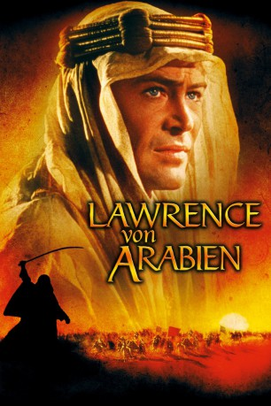

Auszeichnungen: 7 Oscars gewonnen für 3 Oscars nominiert 6 GoldenGlobes gewonnen 4 BAFTA-Awards gewonnen
 gesehen am 20.06.2017
gesehen am 20.06.2017Alternativ: Lawrence of Arabia
Auszeichnungen: 7 Oscars gewonnen für 3 Oscars nominiert 6 GoldenGlobes gewonnen 4 BAFTA-Awards gewonnen gesehen am 20.06.2017
 
 IMDB-Wertung: 8.3 / 10
IMDB-Wertung: 8.3 / 10  IMDB-TOP-Platzierung: 90
IMDB-TOP-Platzierung: 90  Metascore:
Metascore: 
Der britische Offizier Lawrence wird auf die arabische Halbinsel geschickt, um die dortigen politischen Entwicklungen unter Prinz Faisal zu beobachten und den Aufstand der Araber gegen das Osmanische Reich zu unterstützen. Schon kurz nach seiner Ankunft wird dem Briten schonungslos vermittelt, dass es zwischen den verschiedenen Beduinenstämmen einige Konflikte gibt. Wer sich nicht an die Regeln hält, wird erschossen. Im Lager des Prinzen Faisal trifft Lawrence erneut auf Sherif Ali, der ihm bereits in der Wüste begegnete. Gemeinsam machen sie sich auf den Weg, die Wüste Nefud zu durchqueren, um so nach Akaba zu gelangen...
Jahr: 1962
Dauer: 227 Minuten
FSK: 12
Land: England Studio: Columbia Film-VerleihTonspuren: DD5.1 - ,
Untertitel: Deutsch,
Auflösung: 1080p (1920x880) Größe: 19046 MB
Genre: Drama, Abenteuer, Krieg, Geschichte, Biographie
Regisseur: David Lean
Drehbuch: T.E. Lawrence
Soundtrack:
Darsteller:
 Peter O'Toole als T.E. Lawrence
Peter O'Toole als T.E. Lawrence Alec Guinness als Prince Feisal
Alec Guinness als Prince Feisal Anthony Quinn als Auda Abu Tayi
Anthony Quinn als Auda Abu Tayi Jack Hawkins als General Allenby
Jack Hawkins als General Allenby Omar Sharif als Sherif Ali
Omar Sharif als Sherif Ali José Ferrer als Turkish Bey
José Ferrer als Turkish Bey Anthony Quayle als Colonel Brighton
Anthony Quayle als Colonel Brighton Claude Rains als Mr. Dryden
Claude Rains als Mr. Dryden Arthur Kennedy als Jackson Bentley
Arthur Kennedy als Jackson Bentley Jack Gwillim als Club Secretary
Jack Gwillim als Club Secretary John Bennett als (uncredited
John Bennett als (uncredited George Plimpton als Bedouin , uncredited
George Plimpton als Bedouin , uncredited Bryan Pringle als Driver , uncredited
Bryan Pringle als Driver , uncredited Norman Rossington als Corporal Jenkins , uncredited
Norman Rossington als Corporal Jenkins , uncredited Fernando Sancho als Turkish Sergeant , uncredited
Fernando Sancho als Turkish Sergeant , uncredited Cyril Shaps als Bartender in Officer's Club , uncredited
Cyril Shaps als Bartender in Officer's Club , uncreditedDatei: X:\1962\Lawrence von Arabien (1962, FSK12, 1920x880).mkv seit 20.06.2017
Festplatte: HD 1900-1970
 Es gibt insgesamt 23 Filme in der Gruppe '1962'
Es gibt insgesamt 23 Filme in der Gruppe '1962'